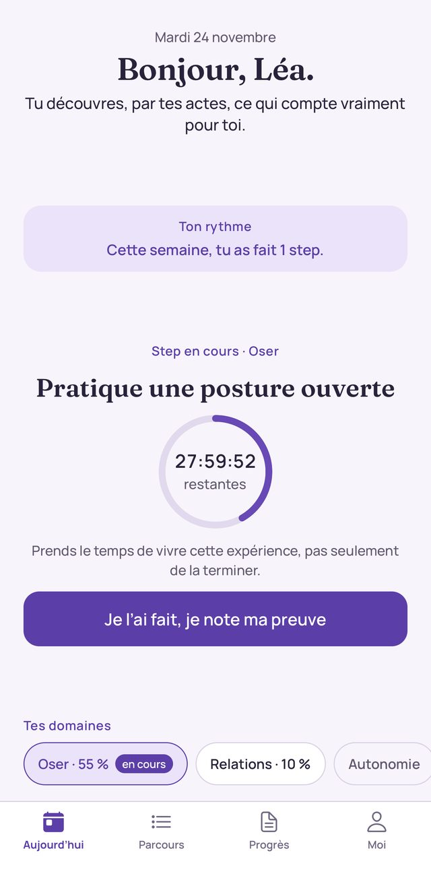
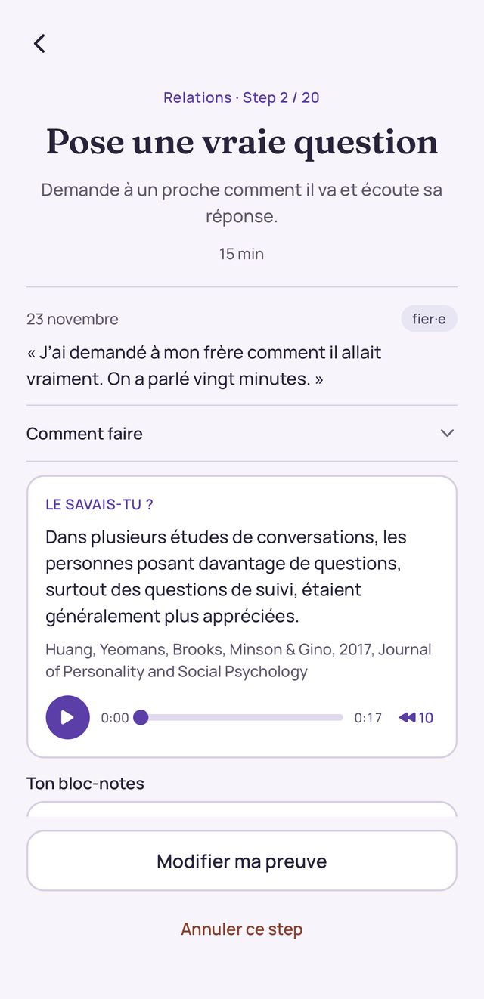
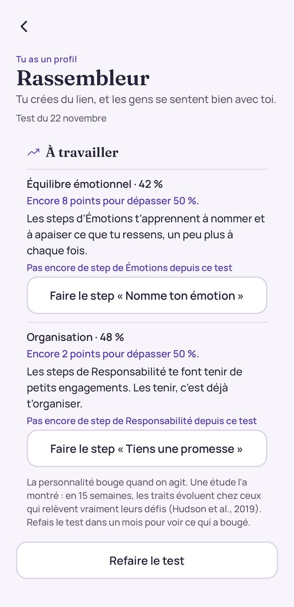
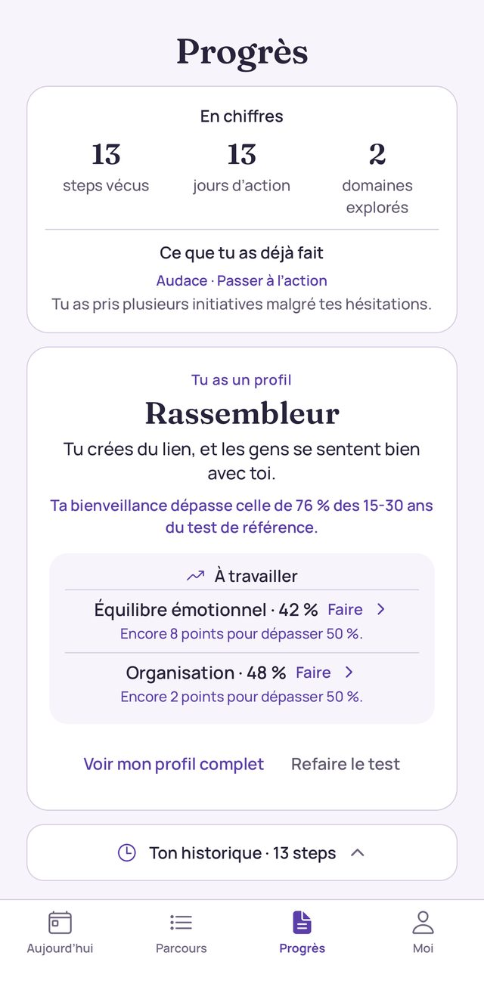

La confiance par l’action
Ose être toi.
La confiance ne se lit pas, elle se vit. Capose te propose 200 steps concrets à vivre dans la vraie vie, un seul à la fois. Pas besoin de te sentir prêt : la confiance vient en le faisant.

- 200 steps concrets
- Un test de personnalité reconnu
- 48 h pour vivre chaque step
Comment ça marche
Un step à la fois. 48 heures pour le vivre.
- 01Découvre ton step.Petit, clair, faisable : poser une vraie question, dire ce que tu préfères, demander un renseignement.
- 02Choisis ton moment.Tu as 48 h. Le temps de vivre l’expérience, pas seulement de la terminer.
- 03Garde ta preuve.Note ce que tu as vécu et ressenti. Même difficile, c’est une preuve.

Ta personnalité
Découvre tes forces. Travaille le reste.
Dix questions, deux minutes. Le test mesure les cinq grands traits de personnalité (TIPI, modèle « Big Five »), créé par des chercheurs en psychologie. Tu obtiens ton profil et tu te compares aux personnes de ton âge.
- →Ton profil, en un mot.Rassembleur, Explorateur… et ce qui te distingue vraiment.
- →Le step qui te fait grandir.Pour chaque trait à travailler, Capose te propose le step qui le fait progresser.
- →Refais-le dans un mois.Pour voir ce qui a bougé. Un repère rapide, pas un diagnostic.

Tes progrès
Des preuves, pas des promesses.
Tes chiffres, ton profil et ton historique sur un seul écran. Chaque step vécu fait avancer l’un de tes trois axes, palier après palier.
Audace
Oser faire ce que tu évitais, et agir malgré le doute.
De Premiers pas à Prendre sa place
Respect de soi
Écouter tes besoins, poser tes limites, assumer tes choix.
De S’accorder de l’attention à Agir avec cohérence
Débrouille
Te débrouiller avec les autres, pour apprendre, en ligne et avec l’argent.
De Premières mises en pratique à Mobiliser ses acquis

Dix domaines, 200 steps
De quoi sortir de ta routine.
- Oser
- Relations
- Autonomie
- Émotions
- Corps & énergie
- Apprendre
- Responsabilité
- Sorties & rencontres
- Numérique
- Argent & projet
L’abonnement
3 jours gratuits pour essayer.
Les 200 steps, le test de personnalité, tes preuves et tes paliers. Connecte-toi avec Apple ou par e-mail : ta progression est sauvegardée.
4,99 €par mois
49,99 €par an, soit 4,17 € par mois
Le prochain pas t’attend.
Télécharger CaposeSuis-nous sur Instagram et TikTok : @capose_app